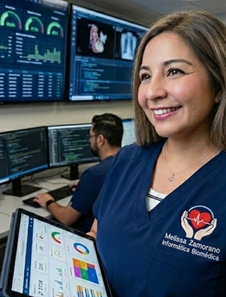
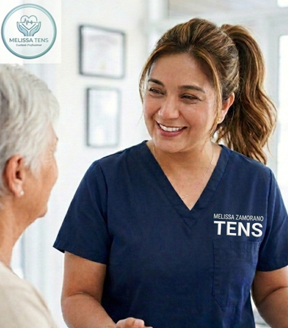

Informática Biomédica
Como Tecnóloga en Informática Biomédica, he desarrollado experiencia en integración clínica–digital, participando en proyectos de interoperabilidad, evaluación de sistemas de información en salud y gestión de datos asistenciales. Mi trayectoria incluye consultoría funcional en sistemas HIS, soporte técnico y formación continua en estándares internacionales de la OPS/OMS.
Acompaño a equipos clínicos y técnicos en procesos de adopción tecnológica, capacitación de usuarios y mejora de flujos asistenciales, asegurando trazabilidad, seguridad del paciente y calidad en el registro clínico.

Técnico en Enfermería (TENS)
Como TENS, brindo cuidados humanizados y seguros en distintos contextos clínicos y domiciliarios. Mi formación y experiencia me permiten ofrecer un acompañamiento integral en situaciones de alta complejidad.
- Administración segura de medicamentos
- Control y registro de signos vitales
- Manejo de dispositivos respiratorios (VM/VNI)
- Curaciones simples y avanzadas
- Apoyo en procesos de rehabilitación
- Cuidados prolongados y acompañamiento terapéutico

Testimonios
"Melissa nos ayudó a transformar nuestra clínica en la implementación de un RCE Su visión es única."
- Cliente Salud Digital"Su asesoría en branding premium nos dio identidad y confianza frente a nuestros pacientes."
- Profesional de Salud"Gracias a su consultoría, logramos integrar tecnología y comunicación clínica de manera efectiva."
- Equipo ClínicoCurrículum & Contacto
Currículum Vitae
Descarga mi CV actualizado con experiencia en Salud Digital, Informática Biomédica y cuidados clínicos.
Descargar CV en PDFContacto
📍 Puente Alto, Región Metropolitana
📞 +56958758398